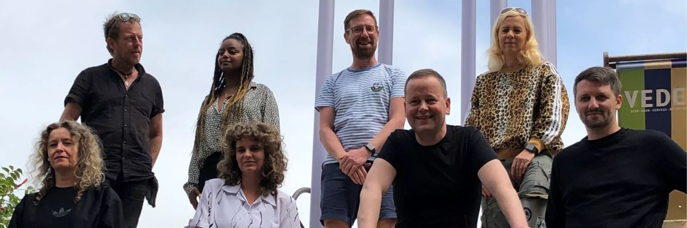

ALEX ist die mediale Kreativplattform für Berlin, die ungewöhnliches Programm für eine außergewöhnliche Stadt anbietet.
Als nicht-kommerzieller Sender bildet ALEX Inhalte von gesellschaftlicher Relevanz jenseits des Mainstreams ab und bietet damit Raum für die innovative Energie des Standorts. ALEX ermöglicht es Menschen, Medien zu erleben und sie selbst zu gestalten und bietet somit nicht nur die Chance, eigene Inhalte im TV, Radio und Internet zu veröffentlichen, sondern ist ein Begegnungsort für Ideen, Kreativität und Austausch.
Darüber hinaus begleitet ALEX als Ausbildungs- und Ereignissender Veranstaltungen rund um Politik, Gesellschaft und Kultur Berlins und ermöglicht engagiertem Mediennachwuchs einen qualifizierten Einstieg in die Medienbranche.
Was entsteht, ist ein innovatives Programm, das die Hauptstadt in ihrer gesamten Vielfalt widerspiegelt: urban, vielschichtig und lebendig.
ALEX ist eine Einrichtung der Medienanstalt Berlin-Brandenburg (mabb) und wird aus Rundfunkgebühren finanziert. ALEX erreicht analog und digital rund 1,64 Millionen TV-Haushalte, hat im Rundfunkbereich eine technische Reichweite von rund drei Millionen UKW-Hörern und verbreitet seine Inhalte über alle gängigen Social Media-Kanäle.
Im Zuge der bundesweiten Einführung des Kabelfernsehens nimmt am 28. August 1985 der Offene Kanal Berlin den Sendebetrieb auf. Die Finanzierung erfolgt von Beginn an aus Rundfunkgebühren.
1997 wird die Sendeschiene „Jugend und Schule“ eingerichtet, die den Grundstein zur Förderung der Medienkompetenz legen soll.
Im selben Jahr führt der Offene Kanal zum ersten Mal Sendeschienen ein. Damit bekommen Sendungen feste Sendezeiten, was sowohl den Produzenten als auch den Zuschauern das Zurechtfinden im Programm erleichtert.
2003 wird das Programm um das Ereignisfernsehen erweitert, in dessen Rahmen der OKB Berliner Veranstaltungen in voller Länge aufzeichnet und anschließend ausstrahlt.
2007 wird – beruhend auf den Beschlüssen des Medienrats der mabb und mit Unterstützung des Abgeordnetenhauses Berlin – von der Medienanstalt Berlin-Brandenburg die Reform des Offenen Kanal Berlin eingeleitet. Der OKB soll zu einer modernen, kreativen und regional relevanten Medienplattplattform werden.
Der OKB wird unter dem Namen ALEX im Mai 2009 relauncht. Es wird eine Programmstruktur eingeführt, die einzelne Sendungen thematisch ordnet. Zusätzlich werden im Rahmen des Qualitäts- und Servicemanagements Sendeplätze nach Evaluierung vergeben. Die Produzierenden erhalten nicht nur ein Feedback zu ihren Inhalten, sondern dank des ALEX Werkstudio auch die Möglichkeit, ihre Beiträge technisch und inhaltlich weiterzuentwickeln.
Ab 2008 werden die Sende- und die Produktionstechnik digitalisiert. Am Ende dieser Entwicklung ist ALEX Full HD-fähig.
2017 zieht ALEX Berlin in die eigens auf die Bedürfnisse des Senders abgestimmte ALEX Halle in der Rudolfstraße. Mit den neuen Räumlichkeiten ist nun genug Platz, die Diskurse aus der Hauptstadt ins Studio zu bringen und somit Interessierten bei diversen öffentlichen Live-Übertragungen die Möglichkeit zu geben, diese direkt vor Ort in der ALEX-Halle zu verfolgen.
Heute ist ALEX Berlin im TV im digitalen Kabelnetz, per TV Livestream, on demand in der TV Mediathek und auf YouTube und über seine Social Media-Profile erreichbar. ALEX RADIO ist via Antenne auf der 91,0 MHz hörbar, außerdem ebenfalls im Radio Livestream, über die Radio Mediathek und auf Mixcloud.
ALEX Berlin ist gefragter Medienpartner im Berliner Stadtleben geworden und begleitet mit dem Ereignis- und Ausbildungsfernsehen die Plenarsitzungen des Abgeordnetenhaus live, berichtet von großen Events und kleinen Szeneveranstaltungen.